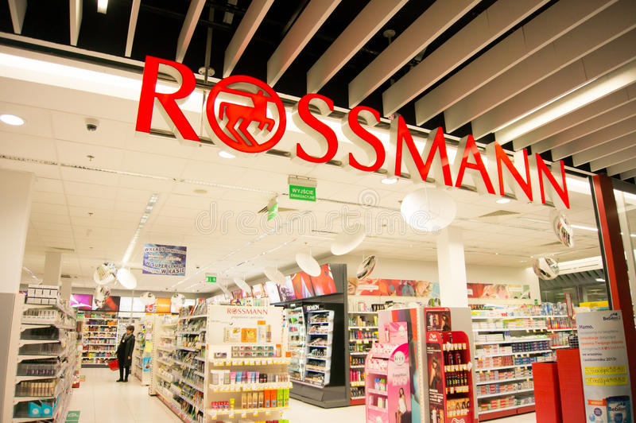
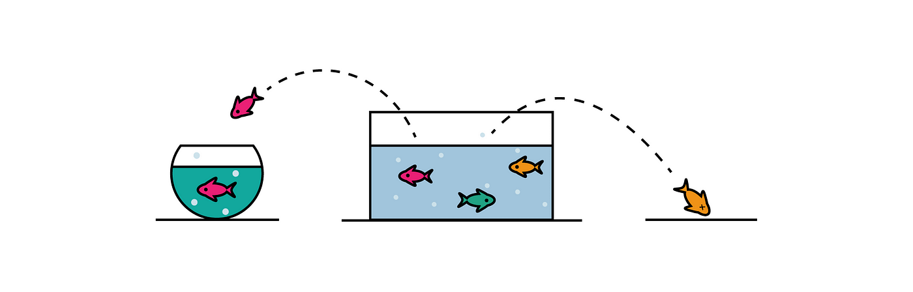
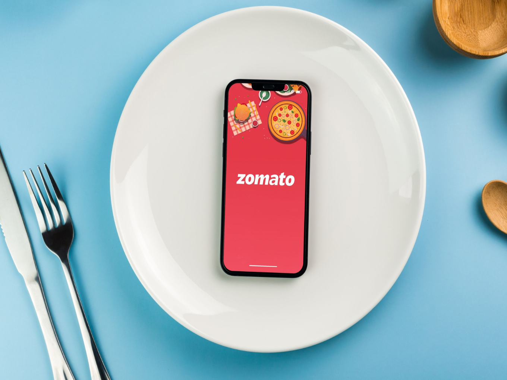
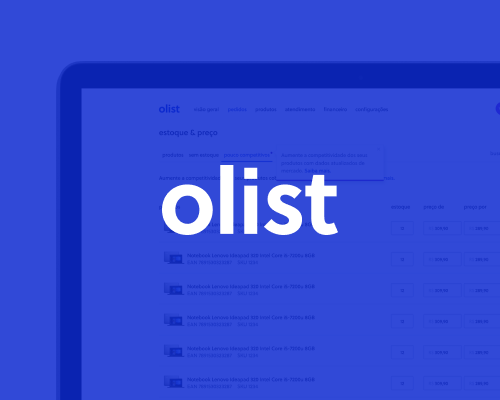

Programação e Banco de dados
- Python
- SQL para a extração de dados
- SGBD: Dbeaver, SQLite, MySQL e PostgreSQL
Construção de soluções de dados para problemas de negócio próximos dos desafios reais das empresas, utilizando dados públicos. Foram realizados projetos de ciência de dados utilizando algoritmos de regressão, classificação e clusterização.
Projetos focados em análise de dados e insights.
Integrante e bolsista CNPq por 2 anos no Laboratóro de Biofísica de Membranas e Células-tronco da UFPE, onde pude desenvolver meu raciocínio analítico e cientíco em pesquisas de biologia computacional/bioinformática. Através dessa experiência, pude auxiliar na implementação de um biossensor estocástico de séries temporais patente do laboratório e em projetos de teste de fármacos por meio de modelos computacionais em proteínas/toxinas de interesse em saúde, diminuindo tempo e custos em testes experimentais e auxiliando no entendimento das afinidades químicas ainda não documentadas na literatura científica.
Competências: método científico, escrita acadêmica, pensamento analítico e criativo e resolução de problemas.Monitora de laboratório em 3 disciplinas diferentes durante a graduação: histologia (2019), embriologia (2021) e biofísica (2021).
Competências: comunicação, auxílio de alunos no manuseio de equipamentos e conteúdos teóricos, construção de apresentações (ppt) e uso do Google Sheets/Excel.Participação em 4 projetos de extensão durante a graduação. As principais atividades envolveram pesquisa bibliográfica em bancos de dados de artigos científicos, escrita acadêmica, apresentação e organização de eventos.
Competências: trabalho em equipe, leitura extensa de artigos em inglês e apresentações.
Projeto de regressão/séries temporais de previsão de vendas da rede de farmácias Rossmann. Com base na previsão dos algoritmos de machine learning, foi possível calcular por meio do erro MAE o melhor e o pior cenário de receita da empresa pelas pelas próximas 6 semanas e o quanto o CFO poderia investir em cada loja.

Projeto de classificação que visou prever o churn para ajudar um banco a classificar seus clientes com base em seus dados. Após o entendimento do negócio, o recall foi utilizado como métrica para treinar os modelos, pois nesse caso, é mais importante detectar todos os possíveis clientes que serão churn do que fazer classificações precisas. Após os resultados, o deploy do modelo foi implementado no Hugging Face.
Projeto de clusterização que visou analisar diferentes perfis de clientes de uma loja de departamentos para auxiliar a equipe de marketing na tomada de decisão. Além disso, foi possível inferir que clientes de alguns clusters podem ser considerados de alto valor para o negócio.

Análise de dados da Zomato, um serviço de busca que torna possível ao usuário buscar informações relacionadas a restaurantes, bares, cafés, pubs e casa noturnas.

Análise de dados da Olist, uma plataforma de e-commerce que atua como um facilitador para os vendedores se conectarem a diferentes marketplaces. A análise dos dados foi feita por meio de consultas com SQL e Python.
Sinta-se à vontade para entrar em contato comigo, tirar dúvidas e dar sugestões :)